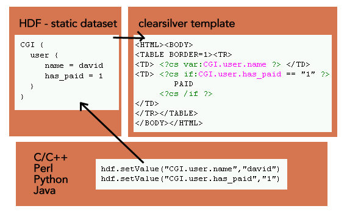

ClearSilver 是一种基于C开发的，快速、高效且功能强大的模板语言，它被设计用来生成各种静态和动态的Web页面。
它严格的将页面展现和业务逻辑分开，使得页面设计人员能够专注于展现逻辑的设计和开发。
并且，它提供了多种语言的访问接口，增强了其通用型和可扩展性。
CS 模板系统包含两个组成部分：Dataset和Template Files。
其中Dataset 为一种树状的数据结构，它被Template Files所引用，并生成最后的页面。CS模板结构如下图所示：
在上图中，Template Files 通常为静态页面元素以及CS 语句的组合，其中的CS 语句通过变量名称来引用dataset中的数据，并通过一定的语法规则生成动态的内容。
产品中引入CS之后，我们可以将静态的页面元素写入到模板文件中，
而将XML数据源以及后台的参数导入到Dataset数据结构中，
通过CS的库函数调用Dataset和Template File来生成整个动态页面。
这样一来，我们的模板开发人员只需要了解基本的CS语法，就可以开发模板文件了。
并且在开发过程中无需了解Erlang语言及EWP其他组成，可以专注于页面元素的设计和实现。
ewp xml转为json流程示例：
xmltojson